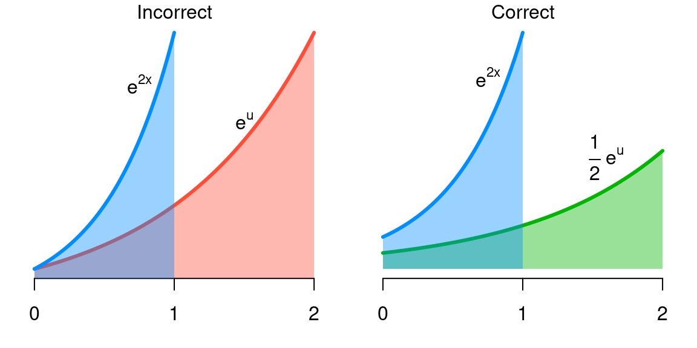

2.8 Integration techniques
Every time we compute a derivative, we get a formula for integration. For example,
\[ f(x) = \log(x^2 + 2) \implies f'(x) = \frac{2x}{x^2 + 2}. \]
This is great news if we are ever faced with the problem of calculating
\[ \int_a^b \frac{2x}{x^2 + 2} \,dx, \]
but if we need to calculate \(\int_a^b f(x) \,dx\), how can we reverse engineer a function \(F(x)\) so that its derivative is \(f(x)\)?
Unfortunately, this task is sometimes easy, sometimes hard, and sometimes impossible (and you have no way of knowing in advance which situation you are in). One could create a huge table of integral formulas by taking derivatives of various things. Providing such a table is beyond the scope of this review, but such tables exist online and are useful resources to be aware of.
Even with such a table, however, there are a few useful integration techniques to be familiar with. Among other things, (a) it may be faster to use one of these techniques than looking up an integral (b) you might not have access to such a table at the moment, and (c) the form that appears in the table might be slightly different than what you need, and you might have to use one of these techniques in combination with the table to compute the integral.
Substitution
By far the most important technique to be aware of is substitution. For example, we know that \(\int e^x \,dx= e^x\), but what if we have to find \(\int e^{2x} \,dx\)? Is it \(e^{2x}\)? The answer (and this is extremely important to understand, because it comes up in statistics all the time) is that no, it isn’t. We can check this easily using the chain rule: the derivative of \(e^{2x}\) is \(2e^{2x}\), so \(\int e^{2x} \,dx\ne e^{2x}\).
In this case, it’s also fairly clear what we need to do in order to fix the problem: \(\int e^{2x} \,dx\) must be \(\tfrac{1}{2}e^{2x}\): there must be a 1/2 present to cancel the 2 that comes from the chain rule.
Conceptually, letting \(u=2x\), we can visualize what’s going on here as follows. Each unit of \(u\) covers twice as much ground as a unit of \(x\). If we don’t do something to correct for this, we’re going to artificially inflate the area under the curve integral (i.e., the integral). This is what’s going on in the red region below, which clearly has greater area than the blue region (the integral we’re trying to calculate).

However, if we compensate for this – we’re stretching \(x\) out by a factor of 2, so we need to shrink the value of the function by a factor of 2 to preserve the correct area – we get the green region, which has the same area as the original blue region.
To formalize this thinking into a procedure, if \(u=g(x)\), then (this works for any differentiable function \(g\))
- \(du = g'(x) \,dx\)
- Substitute \(u\) for \(g(x)\) and \(1/g'(x) \,du\) for \(dx\)
- Take the integral
- Substitute \(g(x)\) back for \(u\)
If we are calculating a definite integral, then instead of step 4, we can transform the limits of integration \(a\) and \(b\) to \(g(a)\) and \(g(b)\); this is usually preferable.
As practice, use this procedure to calculate
\[ \int x (x^2 - 1)^5 \,dx. \]
You should get \(\tfrac{1}{12} (x^2 - 1)^6\).
Integration by parts
Just as the chain rule gave us substitution, the product rule gives us a formula called integration by parts, which is usually written in the form:
\[ \int u \,dv = uv - \int v \,du. \]
As an example of integration by parts in action, suppose we want to integrate \(\int \log x \,dx\). We can write this as
\[\begin{align*} u &= \log x &\qquad dv &= dx \\ du &= \frac{1}{x} \,dx&\qquad v &= x \end{align*}\]
Thus,
\[\begin{align*} \int \log x \,dx&= x \log x - \int x \frac{dx}{x} \\ &= x \log x - \int \,dx\\ &= x \log x - x \end{align*}\]
As practice, use this procedure to calculate
\[ \int x e^x \,dx. \]
You should get \(x e^x - e^x\).
Kernel trick
The above techniques are useful, but in statistics it is often the case that you can avoid them entirely and calculate the answer much faster using something I will call the “kernel trick” (I am not aware of this idea having an official name).
For example, suppose we need to calculate
\[ \int_0^\infty e^{-5x} \,dx. \]
Sure, we can use substitution, but most statisticians will find it easier to recognize that this is very similar to the exponential distribution, which (like all distributions) integrates to 1:
\[ \int_0^\infty \lambda e^{-\lambda x} \,dx= 1 \text{ for all } \lambda> 0. \]
Applying this shortcut:
\[\begin{align*} \int_0^{\infty} e^{-5x} \,dx&= \frac{1}{5} \int_0^\infty 5 e^{-5x} \,dx\\ &= \frac{1}{5} \end{align*}\]
The kernel of a distribution is the part that has the variable we’re integrating over. This is the only part that needs to match in order for the trick to work: we can always manipulate the constants as we did above.
As another example, suppose we need to find
\[ \int_{-\infty}^\infty e^{-x^2} \,dx. \]
This is actually impossible to solve using any of the integration techniques above – there is no elementary form form for its antiderivative. However, it has the kernel of a normal distribution:
\[ \frac{1}{\sigma \sqrt{2\pi}} \exp\left\{ -\frac{1}{2} \left( \frac{x - \mu}{\sigma} \right)^2 \right\} \]
Letting \(\mu=0\) and \(\sigma = 1/\sqrt{2}\), we get
\[\begin{align*} \int_{-\infty}^\infty e^{-x^2} \,dx&= \sqrt{\pi} \int_{-\infty}^\infty \frac{1}{\sqrt{2\pi} / \sqrt{2}} \exp\left\{ -\frac{1}{2} \left( \frac{x}{1/\sqrt{2}} \right)^2 \right\} \\ &= \sqrt{\pi} \end{align*}\]
This may seem complicated at first, but I cannot emphasize enough how important it is to learn this. As a statistician you will become very familiar with these distributions and this will get easier and easier. Every fall, in a ritual as constant as the turning of the leaves, first-year graduate students labor away, trying to solve integrals using elaborate integration by parts techniques, and a professor or older graduate student will look at what they are doing and solve it in seconds using this trick.
As practice, use this procedure to calculate
\[ \int_0^\infty x^2 e^{-x} \,dx\]
by using the kernel trick with respect to the gamma distribution, which has density function
\[ \frac{\beta^\alpha}{\Gamma(\alpha)} x^{\alpha-1} e^{-\beta x}. \]
You should get \(\Gamma(3)\), which is 2: \(\Gamma(\alpha) = (\alpha-1)!\) if \(\alpha\) is an integer.